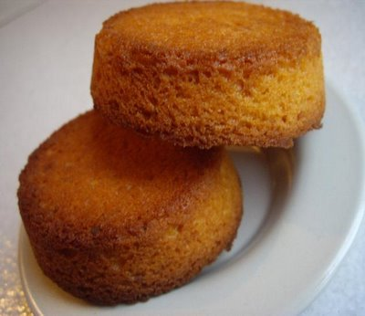

Palets bretons
Ingrédients
6×
- 120 g de farine
- 1 c. à c. de levure chimique
- 90 g de beurre
- 80 g de sucre
- 2 g de fleur de sel
- 2 jaunes d'œufs

Préparation
Étape 1
Tamiser 120 g de farine avec 1 c. à c. de levure chimique. Sabler avec 90 g de beurre ramolli.
Étape 2
Ajouter 80 g de sucre, 2 g de fleur de sel et 2 jaunes d'œufs. Pétrir jusqu’à obtenir une pâte homogène.
Étape 3
Laisser reposer 2h au froid.
Étape 4
Étaler la pâte à 7mm d’épaisseur et détailler 6 disques de 7cm. Les placer dans des moules de 7cm beurrés.
Étape 5
Cuire 15 à 20min à 160ºC. Laisser refroidir dans les moules avant de démouler.
Résumé
120 g de farine
1 c. à c. de levure chimique
90 g de beurre
Tamiser Sabler
80 g de sucre
2 g de fleur de sel
2 jaunes d'œufs
Pétrir
Laisser reposer 2h
Étaler la pâte détailler 6 disques
Cuire 160ºC